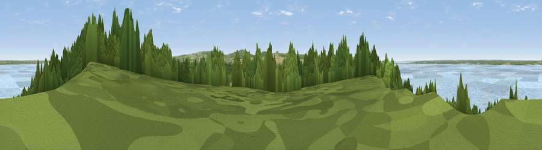

Viewpoint near Cranmore
#31303 in England · top 53% of its area beats it · near CranmoreWhere it is
The exact computed spot (SZ 38675 90625). Click the marker for map links.
The view, rendered

A 360° render of this exact spot computed from the terrain model, tree cover and land cover — summer colours, afternoon light, calibrated against photographs of famous viewpoints. Real trees, hedges and buildings will differ in detail.
The panorama
Grey silhouette: terrain skyline in each direction (720 bearings, Earth curvature and refraction included). Dashed green: skyline with trees (+15 m) and buildings (+8 m) as obstacles. Blue strip: how far the ground is visible on each bearing.
Where the view opens
Wedge length = distance to the farthest visible ground on that bearing (vegetation-aware). Rings at 10, 25 and 50 km.
What fills the view
51% water · 31% woodland · 11% grassland · 7% cropland ·
Angular shares of the visible panorama (visual magnitude), not map area. Landscape diversity 0.51 (0–1 Shannon).
Key numbers
More beautiful places nearby
The staircase of upgrades: each row has a higher view potential than everything closer. Driving times are estimates from straight-line distance, calibrated against real road routing — check an actual route before setting out.
| Place | Direction | Drive | Score |
|---|---|---|---|
| Viewpoint near Cranmore | NE · 0 km | ~2 min | 59.2 |
| Viewpoint near Brook | SSW · 5 km | ~11 min | 82.5 |
| Viewpoint near Brook | S · 5 km | ~11 min | 84.2 |
| Brook Down | S · 5 km | ~12 min | 85.3 |
| Mottistone Down | SSE · 6 km | ~13 min | 87.2 |
| St Catherines Hill | SE · 17 km | ~30 min | 87.6 |
| Viewpoint near Chale | SE · 18 km | ~31 min | 88.3 |
| Viewpoint near Niton | SE · 18 km | ~31 min | 89.2 |
50.71398, -1.45358 · source: screening · position refined by local search. Computed location — check access rights before visiting.